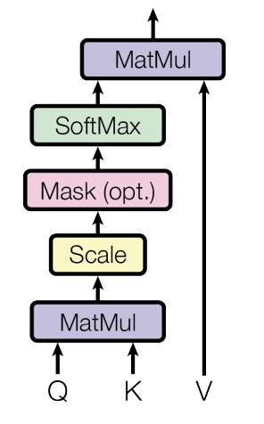
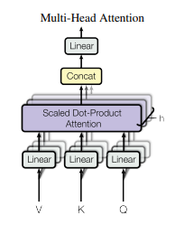

An attention function can be described as mapping a query and a set of key-value pairs to an output, where the query, keys, values, and output are all vectors. The output is computed as a weighted sum of the values, where the weight assigned to each value is computed by a compatibility function of the query with the corresponding key.
[success]
Attention是指通过某种算法，将问题向量q、键矩阵K、值矩阵V共同映射成一个特定长度的向量。
实际使用attention时，通常把所有n_q个问题向量合并成问题矩阵Q，最后得到n_q个输出向量。
Q的大小为n_q d_k，n_q为问题个数，d_k为问题向量的维度。
K的大小为n_k d_k，n_k为键值对的个数，d_k为键向量的维度。
V的大小为n_k * d_v，n_k为键值对的个数，d_v为值向量的维度。[warning] [?] 在本文中，Q、K、V分别是指什么呢？
1. Scaled Dot-Product Attention

We call our particular attention "Scaled Dot-Product Attention" (Figure 2). The input consists of queries and keys of dimension dk, and values of dimension dv. We compute the dot products of the query with all keys, divide each by , and apply a softmax function to obtain the weights on the values.
In practice, we compute the attention function on a set of queries simultaneously, packed together into a matrix Q. The keys and values are also packed together into matrices K and V . We compute the matrix of outputs as:
The two most commonly used attention functions are additive attention [2], and dot-product (multiplicative) attention. Dot-product attention is identical to our algorithm, except for the scaling factor of . Additive attention computes the compatibility function using a feed-forward network with a single hidden layer. While the two are similar in theoretical complexity, dot-product attention is much faster and more space-efficient in practice, since it can be implemented using highly optimized matrix multiplication code.
While for small values of dk the two mechanisms perform similarly, additive attention outperforms dot product attention without scaling for larger values of dk [3]. We suspect that for large values of dk, the dot products grow large in magnitude, pushing the softmax function into regions where it has extremely small gradients 4 .
[info]
4 To illustrate why the dot products get large, assume that the components of q and k are independent random variables with mean 0 and variance 1. Then their dot product, , has mean 0 and variance .
To counteract this effect, we scale the dot products by .
[success]
已有的attention方法：
（1）dot-product attention：softmax的对象是一个n_q * n_k的矩阵。softmax的行为是对矩阵的每一行分别做softmax。即矩阵每一行的和为1。
（2）additive attention
computes the compatibility function using a feed-forward network with a single hidden layer
两种方法的比较：
（1）比（2）速度快，占用空间少。
当dk不大时，（1）和（2）性能差不多。
当dk很大时，（2）性能更好。
本文方法：
scaled dot-product attention是本文的创新点之一。它在（1）的基础上增加scaled。
特点：
具有（1）的优点。
解决当dk大时（1）性能不好的问题。因为dk太大会导致“dot products grow large in magnitude, pushing the softmax function into regions where it has extremely small gradients”。
class ScaledDotProductAttention(nn.Module):
''' Scaled Dot-Product Attention '''
def __init__(self, temperature, attn_dropout=0.1):
super().__init__()
self.temperature = temperature
self.dropout = nn.Dropout(attn_dropout)
def forward(self, q, k, v, mask=None):
attn = torch.matmul(q / self.temperature, k.transpose(2, 3))
if mask is not None:
attn = attn.masked_fill(mask == 0, -1e9)
attn = self.dropout(F.softmax(attn, dim=-1))
output = torch.matmul(attn, v)
return output, attn
2. Multi-Head Attention
Instead of performing a single attention function with dmodel-dimensional keys, values and queries, we found it beneficial to linearly project the queries, keys and values h times with different, learned linear projections to dk, dk and dv dimensions, respectively. On each of these projected versions of queries, keys and values we then perform the attention function in parallel, yielding dv-dimensional output values. These are concatenated and once again projected, resulting in the final values, as depicted in Figure 2.

Multi-head attention allows the model to jointly attend to information from different representation subspaces at different positions. With a single attention head, averaging inhibits this.
where
Where the projections are parameter matrices , , and .
In this work we employ h = 8 parallel attention layers, or heads. For each of these we use dk = dv = dmodel/h = 64. Due to the reduced dimension of each head, the total computational cost is similar to that of single-head attention with full dimensionality.
[success]
将问题、键、值分别生成几组不同d_k和d_v的矩阵。
每组用上面的scaled dot-product attention生成一个或（n_q）个输出向量。
同一个问题对应的所有组输出向量concat到一起，得到一个或（n_q）个长的向量。
class MultiHeadAttention(nn.Module):
''' Multi-Head Attention module '''
def __init__(self, n_head, d_model, d_k, d_v, dropout=0.1):
super().__init__()
self.n_head = n_head
self.d_k = d_k
self.d_v = d_v
self.w_qs = nn.Linear(d_model, n_head * d_k, bias=False)
self.w_ks = nn.Linear(d_model, n_head * d_k, bias=False)
self.w_vs = nn.Linear(d_model, n_head * d_v, bias=False)
self.fc = nn.Linear(n_head * d_v, d_model, bias=False)
self.attention = ScaledDotProductAttention(temperature=d_k ** 0.5)
self.dropout = nn.Dropout(dropout)
self.layer_norm = nn.LayerNorm(d_model, eps=1e-6)
def forward(self, q, k, v, mask=None):
d_k, d_v, n_head = self.d_k, self.d_v, self.n_head
sz_b, len_q, len_k, len_v = q.size(0), q.size(1), k.size(1), v.size(1)
residual = q
# Pass through the pre-attention projection: b x lq x (n*dv)
# Separate different heads: b x lq x n x dv
q = self.w_qs(q).view(sz_b, len_q, n_head, d_k)
k = self.w_ks(k).view(sz_b, len_k, n_head, d_k)
v = self.w_vs(v).view(sz_b, len_v, n_head, d_v)
# Transpose for attention dot product: b x n x lq x dv
q, k, v = q.transpose(1, 2), k.transpose(1, 2), v.transpose(1, 2)
if mask is not None:
mask = mask.unsqueeze(1) # For head axis broadcasting.
q, attn = self.attention(q, k, v, mask=mask)
# Transpose to move the head dimension back: b x lq x n x dv
# Combine the last two dimensions to concatenate all the heads together: b x lq x (n*dv)
q = q.transpose(1, 2).contiguous().view(sz_b, len_q, -1)
q = self.dropout(self.fc(q))
q += residual
q = self.layer_norm(q)
return q, attn
3. Applications of Attention in our Model
The Transformer uses multi-head attention in three different ways:
• In "encoder-decoder attention" layers, the queries come from the previous decoder layer, and the memory keys and values come from the output of the encoder. This allows every position in the decoder to attend over all positions in the input sequence. This mimics the typical encoder-decoder attention mechanisms in sequence-to-sequence models such as [38, 2, 9].
[success]
这里用的是recurrent attention mechanism。历史的encoder输入都会被记录和用于这里的注意力机制中。
query: decoder
key: encoder
value: encoder
• The encoder contains self-attention layers. In a self-attention layer all of the keys, values and queries come from the same place, in this case, the output of the previous layer in the encoder. Each position in the encoder can attend to all positions in the previous layer of the encoder.
[success]
这里用的是self-attention。
query、key、value都是所有position的上一层encoder的输出。
• Similarly, self-attention layers in the decoder allow each position in the decoder to attend to all positions in the decoder up to and including that position. We need to prevent leftward information flow in the decoder to preserve the auto-regressive property. We implement this inside of scaled dot-product attention by masking out (setting to −∞) all values in the input of the softmax which correspond to illegal connections. See Figure 2.
[success]
这里用的是self-attention。
query、key、value都是过去时间步的上一层decoder的输出。
[warning] [?] Q/K/V为什么要这样设置？